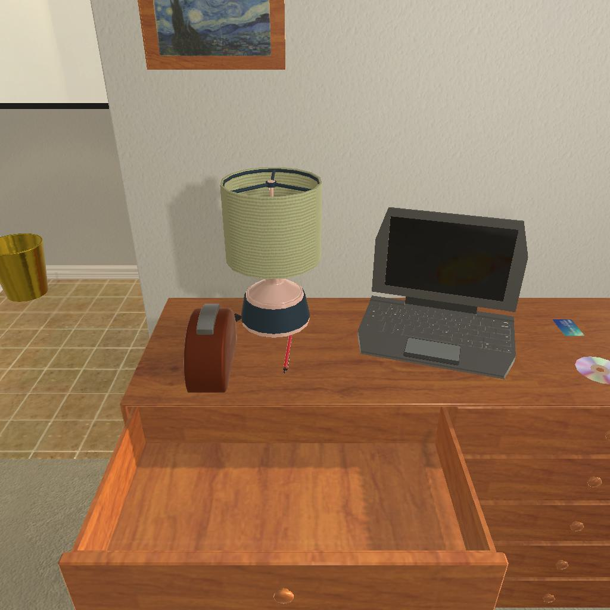

---------------------------------------------------------task: 1---------------------------------------------------------
--------------------------------------------------------------------------------------------------------------------------------------------------------------------
--------------------------------------------------------------------------------------------------------------------------------------------------------------------
Step:--------------------------------------------------------------------------3-------------------------------------------------------------------------------
----------------------------------------
VLM Prompt:
Image1:
**Instruction**
1. Analyze the provided image to identify all visible household objects, focusing on those relevant to the task description "look at alarmclock under the desklamp."
2. Use the analysis of the image and the task hint "The agent must find an object of the desired type, locate and turn on a light source with the desired object in-hand." to answer the question: what is the most reasonable action in the choices for the task description "look at alarmclock under the desklamp"?
4. Decide and write the answer using the template: The answer is: (i): , where i is the real number. If there is no desired object in the image, search every place based on **Initial Observation** to find the object. And if no one is exactly correct, choose a similar answer.
**Initial Observation**
You are in the middle of a room. Looking quickly around you, you can see bed (1), dresser (1), drawer (1-10), garbagecan (1), shelf (1-7)
**Answer Choices**
(1): go to bed 1
(2): go to dresser 1
(3): go to drawer 3
(4): go to drawer 4
(5): go to drawer 5
(6): go to garbagecan 1
(7): go to drawer 6
(8): go to drawer 7
(9): go to drawer 8
(10): go to drawer 9
(11): go to drawer 10
(12): go to shelf 1
(13): go to shelf 2
(14): go to shelf 3
(15): go to shelf 4
(16): go to shelf 5
(17): go to shelf 6
(18): go to shelf 7
(19): open drawer 2
(20): close drawer 2
(21): examine drawer 2
**Answer**
Let's think step by step by following the instructions.
----------------------------------------
----------------------------------------
Original Response:
Firstly, we need to identify all visible household objects relevant to the task description "look at alarmclock under the desklamp." From the image provided, we can see a desk lamp on the desk and an alarm clock right in front of it. The task hint also suggests that we need to find an object of the desired type (which is the alarm clock), locate and turn on a light source (which is the desk lamp) with the desired object in-hand.
Based on the initial observation, there is no need to search every place as the desired object (alarm clock) and the light source (desk lamp) are both visible in the image. Therefore, the most reasonable action is to interact directly with the alarm clock and the desk lamp on the desk.
However, the provided answer choices do not include an action that directly corresponds to 'interact with the alarm clock' or 'turn on the desk lamp.' The closest action related to the desk, where both the alarm clock and desk lamp are located, is to open or examine drawer 2, which is part of the desk. Although not exactly correct, it is the most similar action to the task description.
Hence, the answer is:
(21): examine drawer 2
----------------------------------------
----------------------------------------
>>> Refine Original VLM Response and Get Pure Action: No action
----------------------------------------
-----------------------------------------------------------------
Running time: 11.201170206069946 seconds
Total Money: 0.32628999999999997
-----------------------------------------------------------------
-----------------------------------------------------------------
Text Observation:Nothing happens.
-----------------------------------------------------------------
UNSUCCEED